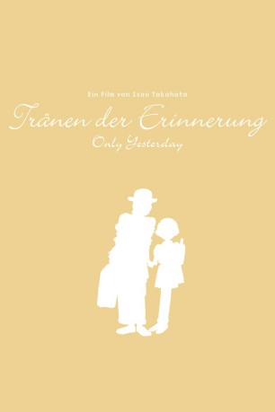

#779 Tränen der Erinnerung
Alternativ: Only Yesterday (Englischer Titel)
 
 IMDB-Wertung: 7.7 / 10
IMDB-Wertung: 7.7 / 10  Metascore: 90
Metascore: 90 
Die 27-jährige Taeko ist im Jahr 1982 eine Büroangestellte in Tokio. Obwohl ihre Familie sie zum Heiraten drängt, ist sie alleinstehend. Taeko, die schon seit ihrer Geburt in Tokio lebt, möchte die Großstadt für ein paar Tage verlassen und wegfahren, um sich ein wenig Urlaub zu gönnen. Ihre Schwester Nanako schlägt vor, dass sie die Familie ihres Ehemannes besuchen könnte, da dieser ursprünglich einer Bauernfamilie vom Land, der Präfektur Yamagata im Norden Japans, entstammt. Auf der Fahrt dorthin erlangt sie Erinnerungen an ihre Kindheit in der fünften Klasse der Grundschule wieder. Sie erinnert sich unter anderem an ihre erste Liebe.
Jahr: 1991
Dauer: 118 Minuten
FSK: 12
Land: Japan Studio: UFATonspuren:
Untertitel: Deutsch,
Auflösung: 1080p (1920x1040) Größe: 9666 MB
Genre: Animation/Trick, Drama, Liebe
Regisseur: Isao Takahata
Drehbuch: Hotaru Okamoto, Yuuko Tone, David Freedman, Isao Takahata
Soundtrack: Katsu Hoshi
Darsteller:
- Youko Honna als Taeko, Child
 Laura Bailey als Nanako Okajima
Laura Bailey als Nanako Okajima- Jaden Betts als Soo
- Ashley Eckstein als Yaeko
- Alison Fernandez als Taeko Okajima, 5th Grade
 Grey Griffin als Taeko's Mother
Grey Griffin als Taeko's Mother Hope Levy als Tsuneko
Hope Levy als Tsuneko- Sumalee Montano als Kiyoko / Taeko's Aunt
 Dev Patel als Toshio
Dev Patel als Toshio Daisy Ridley als Taeko Okajima
Daisy Ridley als Taeko Okajima- Tara Sands als Osage / Additional Voices
 Stephanie Sheh als Aiko
Stephanie Sheh als Aiko Tara Strong als Naoko
Tara Strong als Naoko- Matthew Yang King als Father / Kazou
- Madeleine Rose Yen als Rei
- Miki Imai als Taeko
- Toshirô Yanagiba als Toshio
- Gia Colon-Thielmann als Shuji Hirota
- Mayumi Iizuka als Tsuneko Tani
- Masahiro Ito als Father
- Chie Kitagawa als Taeko's Grandmother
- Yoshimasa Kondô als Additional Voices
- Yuuki Masuda als Hirota
- Yuki Minowa als Yaeko
- Issei Takahashi als Additional Voices
- Michie Terada als Mother
- Yorie Yamashita als Nanako
- Ichirô Nagai als Torahige , uncredited
Datei: X:\Kinder Anime\Studio Ghibli\Tränen der Erinnerung (1991, FSK12, 1920x1040).mkv seit 23.03.2015
Festplatte: Kinder-Filme+Trick
 Es gibt insgesamt 27 Filme in der Gruppe 'Kinder Anime\Studio Ghibli'
Es gibt insgesamt 27 Filme in der Gruppe 'Kinder Anime\Studio Ghibli'